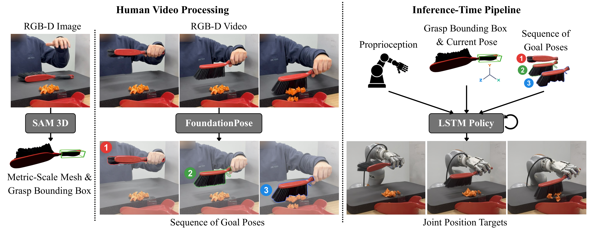
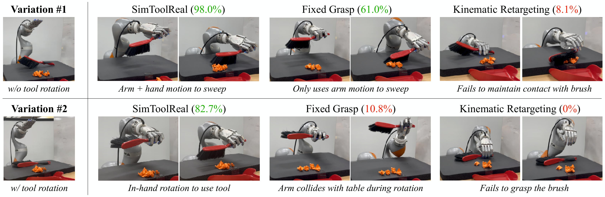
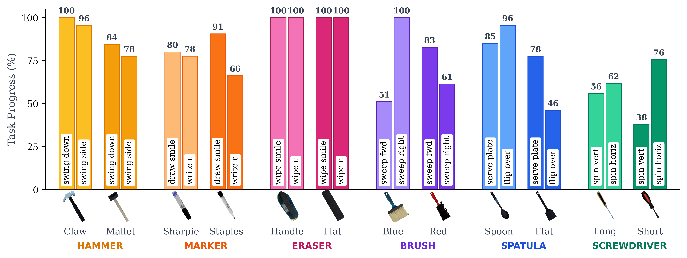
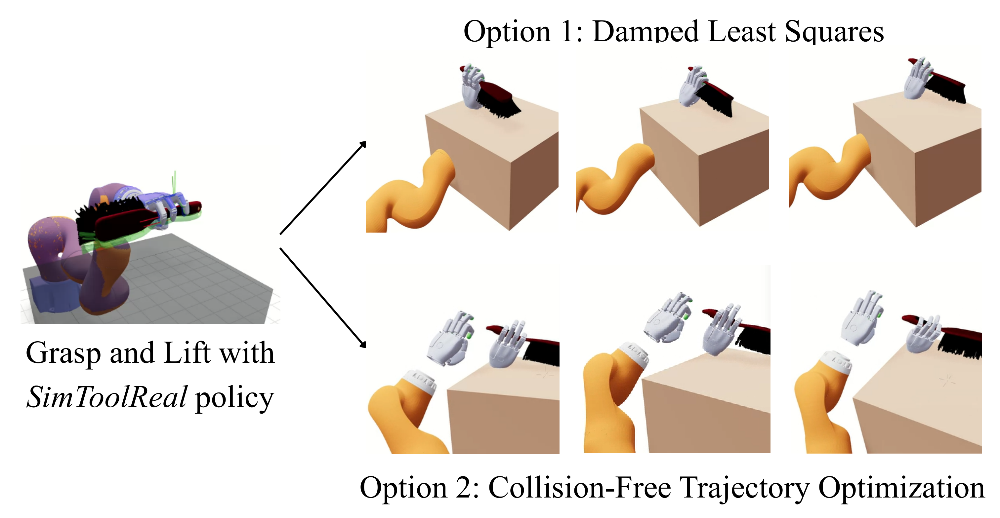
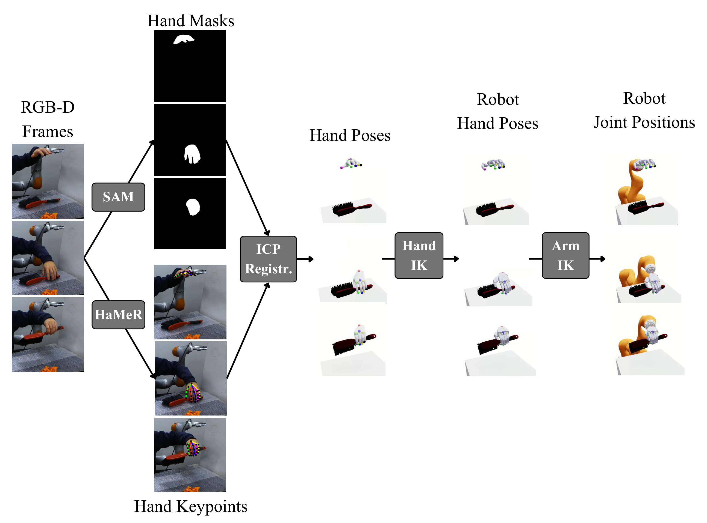
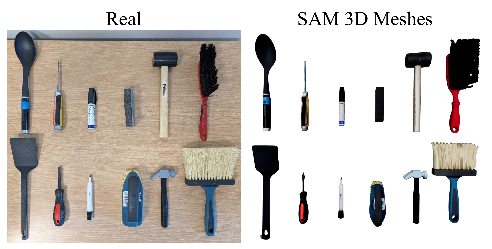
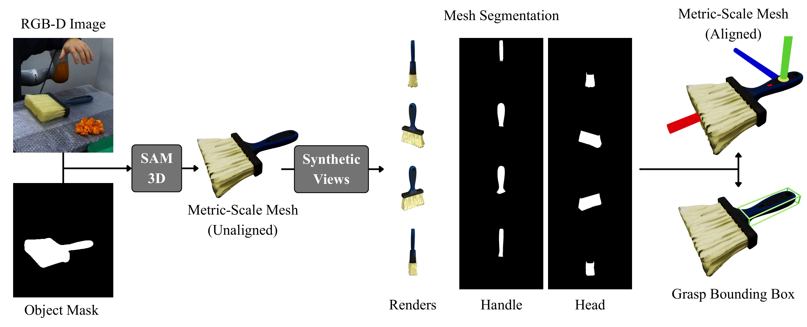
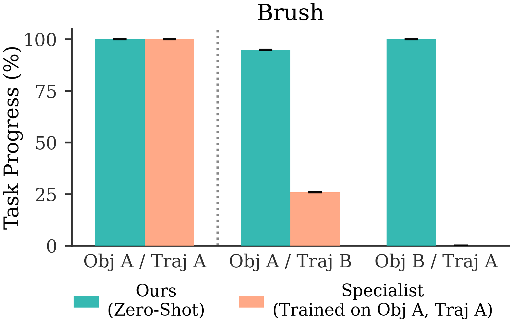

fig:pipeline. Overview of \methodname. (Top) Training in Simulation: We train a goal-conditioned RL policy in simulation that manipulates a wide variety of procedurally-generated objects to randomly sampled goal poses. (Bottom) Inference in Real: We deploy this policy zero-shot on real-world tools from DexToolBench, following tool trajectories from human videos. 本文解读：对 SimToolReal 而言，这张图对应一个可单独检查的论文证据。图的上下两部分对应不同阶段或不同运行域，阅读时应沿着上半部分的训练信息流，再检查下半部分如何把同一表示用于真实推理。它支撑的是 SimToolReal 的方法结构与模块分工，不直接证明性能提升；性能因果仍需由对应消融和真实任务结果确认。 本图的证据场景限定为：fig:pipeline.。

fig:inference. Real-World Deployment. (Left) Human Video Processing: We collect an RGB-D human video and process it using vision foundation models. We use SAM 3D~chen2025sam to generate a metric-scale object mesh and segment a 3D grasp bounding box. Then, we use FoundationPose~wen2024foundationpose to extract a sequence of 6D goal poses. (Right) Inference-Time Pipeline: Our LSTM policy takes in proprioception, object pose, grasp bounding box, and goal pose, and it outputs joint position targets for the 29-DoF dexterous robot (arm + hand). 本文解读：对 SimToolReal 而言，这张图需要重点核对 29、RGB-D、SAM 3D、FoundationPose 之间的关系。左右面板承担不同功能：左侧通常给出输入、编码或训练过程，右侧展示解码、推理或部署结果；箭头之间的接口就是复现时必须对齐的数据契约。它支撑的是 SimToolReal 的方法结构与模块分工，不直接证明性能提升；性能因果仍需由对应消融和真实任务结果确认。 本图的证据场景限定为：fig:inference.。
工具 primitive 由 handle 和 head 组合，几何形状包括圆柱和长方体，并随机化尺寸与密度。这个设计覆盖刷子、锅铲、马克笔、锤子等日常工具的结构共性。

fig:dexFuncComparison. Comparison against Baselines in the Real World. We compare \methodname\; against baselines on two variations of sweeping a table with a brush: with and without requiring tool rotation based on the initial states shown on the left. Average Task Progress is indicated in parentheses. \methodname\; succeeds on both variations, performing dexterous in-hand tool rotations in the harder variation. Fixed Grasp succeeds on the simpler variation of this task without tool rotation. However, when rotation is required, enforcing a fixed grasp causes the arm to collide with the table while tracking the target trajectory. Kinematic Retargeting fails to reason about contact forces, and is unable to grasp the brush in both variations. 本文解读：对 SimToolReal 而言，这张图对应一个可单独检查的论文证据。这张消融图把完整方法与删减组件后的版本放在同一评估条件下。重点应看移除哪个组件后下降最大，以及下降是否集中发生在论文声称要解决的困难场景。如果删减版本只在部分任务下降，说明该组件对 SimToolReal 的作用具有任务条件；不能把单一平均值下降解释为所有场景都依赖它。 本图的证据场景限定为：fig:dexFuncComparison.。

fig:generalizationResults. \textbfGeneralization to Unseen DexToolBench Tools and Tasks in the Real World. We evaluate our policy in the real world on unseen tool-use tasks in DexToolBench. Our evaluations span 24 unique task trajectories across 6 different object categories and 12 object instances. Each bar corresponds to 1 task trajectory on 1 object instance. We report the average Task Progress across 5 rollouts. Despite not being trained on these objects or trajectories, our policy demonstrates strong generalization to diverse tools of varying masses and geometries. 本文解读：对 SimToolReal 而言，这张图需要重点核对 24、6、12 object、1 task、1 object、5 之间的关系。这张对比图应按相同任务和指标逐列读取，而不是只看总体平均。需要区分对手方法、训练数据是否一致，以及提升来自成功率、任务进度还是执行稳定性。图能支持 SimToolReal 在所列基线与任务上的相对优势，但没有覆盖的手型、对象或部署条件仍属于外推。 本图的证据场景限定为：fig:generalizationResults.。fig:ablations. Ablation of RL Training Components. We compare the training reward across environment steps of \methodname\; against ablations averaged across 5 seeds. Replacing SAPG~sapg2024 with PPO~PPO or not using Asymmetric Critic~asymmetric_actor_critic results in a significant performance drop, highlighting their importance. 本文解读：对 SimToolReal 而言，这张图需要重点核对 5、SAPG、PPO 之间的关系。这张消融图把完整方法与删减组件后的版本放在同一评估条件下。重点应看移除哪个组件后下降最大，以及下降是否集中发生在论文声称要解决的困难场景。如果删减版本只在部分任务下降，说明该组件对 SimToolReal 的作用具有任务条件；不能把单一平均值下降解释为所有场景都依赖它。 本图的证据场景限定为：fig:ablations.。
fig:trainTestCorrelation. Training Objective Drives Generalization. In simulation, we evaluate (Left) the episode reward on procedurally-generated objects and (Right) the zero-shot Task Progress on unseen DexToolBench tools on different policy checkpoints throughout training. The strong correlation between the two curves validates our core hypothesis: improving random goal-pose reaching performance on diverse object primitives drives corresponding gains in generalization to unseen tool-use tasks. 本文解读：对 SimToolReal 而言，这张图对应一个可单独检查的论文证据。这张对比图应按相同任务和指标逐列读取，而不是只看总体平均。需要区分对手方法、训练数据是否一致，以及提升来自成功率、任务进度还是执行稳定性。图能支持 SimToolReal 在所列基线与任务上的相对优势，但没有覆盖的手型、对象或部署条件仍属于外推。 本图的证据场景限定为：fig:trainTestCorrelation.。fig:specialistComparison. Comparison against Specialists. We compare \methodname\; in simulation against specialist policies trained on a single object (Obj A) and trajectory (Traj A). We train one specialist policy for each of the 6 object categories in DexToolBench and report the average Task Progress across these categories. While the specialists succeed on their training setup (Obj A / Traj A), performance degrades under deviation in the trajectory (Obj A / Traj B) or the object (Obj B / Traj A). \methodname\; has high zero-shot performance across all variants, despite not being trained on these objects or trajectories. 本文解读：对 SimToolReal 而言，这张图需要重点核对 6 object 之间的关系。这张对比图应按相同任务和指标逐列读取，而不是只看总体平均。需要区分对手方法、训练数据是否一致，以及提升来自成功率、任务进度还是执行稳定性。图能支持 SimToolReal 在所列基线与任务上的相对优势，但没有覆盖的手型、对象或部署条件仍属于外推。 本图的证据场景限定为：fig:specialistComparison.。

fig:fixed_grasp_visualization. Fixed Grasp Baselines. We first use our SimToolReal policy to grasp and lift the object. We then attempt to follow the trajectory using a fixed grasp. Option 1 (Damped Least Squares): Tracks the target poses but causes severe collisions with the table. Option 2 (Collision-Free Trajectory Optimization): Avoids collisions but fails to reach the target poses. 本文解读：对 SimToolReal 而言，这张图需要重点核对 1、2、SimToolReal 之间的关系。这张对比图应按相同任务和指标逐列读取，而不是只看总体平均。需要区分对手方法、训练数据是否一致，以及提升来自成功率、任务进度还是执行稳定性。图能支持 SimToolReal 在所列基线与任务上的相对优势，但没有覆盖的手型、对象或部署条件仍属于外推。 本图的证据场景限定为：fig:fixed_grasp_visualization.。
fig:keypoints. Object Keypoints. (Left) Visualization of 4 pose keypoints in the local object frame. (Right) Visualization of the keypoint distances used to compute the distance d(o_t, g). 本文解读：对 SimToolReal 而言，这张图需要重点核对 4 之间的关系。这张图可视化了论文依赖的中间表示。应检查相同语义或相同接触条件下表示是否一致，以及动作、手型或仿真域变化时表示是否仍保留任务相关差异。中间表示看起来合理只是必要条件；它是否真正服务 SimToolReal 的控制，还要与策略成功率、规划结果或跨域实验一起判断。 本图的证据场景限定为：fig:keypoints.。

fig:kinematic_retargeting_visualization. Kinematic Retargeting Pipeline. From the RGB-D human video, we use SAM 2~ravi2024sam2 for hand masks and HaMeR~pavlakos2024reconstructing for hand pose prediction. Next, we use ICP registration to align the hand pose prediction with the segmented hand point cloud to obtain accurate 3D hand poses. Lastly, we perform IK-based retargeting of the arm and hand to match the human wrist pose and fingertip positions. 本文解读：对 SimToolReal 而言，这张图需要重点核对 2、RGB-D 之间的关系。这是一张系统总览图。应顺着箭头确认观测、核心表示、训练目标与执行输出的先后关系，并检查论文的主要创新究竟插入了信息流的哪一段。它支撑的是 SimToolReal 的方法结构与模块分工，不直接证明性能提升；性能因果仍需由对应消融和真实任务结果确认。 本图的证据场景限定为：fig:kinematic_retargeting_visualization.。

fig:real_sim_objects. \textbfDexToolBench Objects. (Left): Real-world objects. (Right): SAM 3D~chen2025sam generated meshes of these objects. 本文解读：对 SimToolReal 而言，这张图需要重点核对 SAM 3D 之间的关系。这张图说明训练或评估数据覆盖了哪些对象、任务、场景与具身。判断泛化结论时，应把图中的覆盖范围与测试集逐项比较，尤其关注长尾类别和训练中未出现的组合。它证明的是 SimToolReal 数据的覆盖与多样性，而不是单独证明模型已利用这些多样性产生泛化。 本图的证据场景限定为：fig:real_sim_objects.。fig:real_world_task_frames. \textbfRepresentative Examples of DexToolBench Tasks. Visual breakdown of representative tasks in DexToolBench across the 6 tool categories, highlighting the diversity of objects and manipulation tasks. 本文解读：对 SimToolReal 而言，这张图需要重点核对 6 之间的关系。这张图说明训练或评估数据覆盖了哪些对象、任务、场景与具身。判断泛化结论时，应把图中的覆盖范围与测试集逐项比较，尤其关注长尾类别和训练中未出现的组合。它证明的是 SimToolReal 数据的覆盖与多样性，而不是单独证明模型已利用这些多样性产生泛化。 本图的证据场景限定为：fig:real_world_task_frames.。

fig:sam_pipeline. Metric-Scale Mesh and Grasp Bounding Box Acquisition. We present a semi-automated pipeline to extract a metric-scale mesh and grasp bounding box from a single RGB-D video scan. (1) We first segment the target object in the initial frame and reconstruct a 3D mesh using SAM 3D~chen2025sam, injecting the captured depth map to ensure metric accuracy. (2) To establish a canonical coordinate frame, we virtually render the mesh from multiple views and use SAM 2~ravi2024sam2 to segment the geometry into ``handle'' and ``head'' regions based on user prompts. (3) The final grasp bounding box is derived from the handle's geometry: it is centered on the handle, with the positive x-axis oriented toward the head, ensuring consistent alignment with policy training. 本文解读：对 SimToolReal 而言，这张图需要重点核对 1、2、3、RGB-D、SAM 3D 之间的关系。这是一张系统总览图。应顺着箭头确认观测、核心表示、训练目标与执行输出的先后关系，并检查论文的主要创新究竟插入了信息流的哪一段。它支撑的是 SimToolReal 的方法结构与模块分工，不直接证明性能提升；性能因果仍需由对应消融和真实任务结果确认。 本图的证据场景限定为：fig:sam_pipeline.。

fig:specialist_all_reuslts. Detailed Comparison against Specialists. We provide a breakdown of the results in Fig.~fig:specialistComparison. Each plot compares SimToolReal to a specialist policy trained on a single object and trajectory (Obj A / Traj A) for a single object category. 本文解读：对 SimToolReal 而言，这张图需要重点核对 SimToolReal 之间的关系。这张对比图应按相同任务和指标逐列读取，而不是只看总体平均。需要区分对手方法、训练数据是否一致，以及提升来自成功率、任务进度还是执行稳定性。图能支持 SimToolReal 在所列基线与任务上的相对优势，但没有覆盖的手型、对象或部署条件仍属于外推。 本图的证据场景限定为：fig:specialist_all_reuslts.。